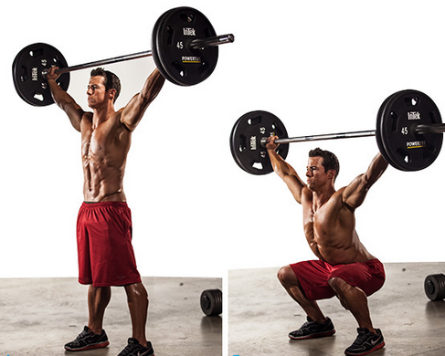
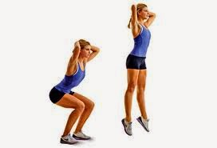

Tipos de sentadillas
Homepage
Our Clients
About Us
Privacy policy
Terms and Conditions
Photo gallery
Contacts
Welcome to Tipos de sentadillas
【 10 TIPOS de Sentadillas en CASA 】 + CONSEJOS
Sentadillas: tipos, beneficios y qué músculos se trabajan
10 tipos diferentes de hacer sentadillas para . - Thiomucase
Tipos de sentadilla y sus funciones - CrossFit
10 tipos de sentadillas y para qué sirven cada una – Revista .
10 tipos de sentadillas para maximizar tu . - El Ciudadano
Hay seis tipos de sentadillas, y ninguna es el mejor ejercicio .
12 variantes de sentadilla para tonificar piernas y glúteos
10 en casa · Sentadillas simples o tradicional · Sentadillas para aductores .
9 tipos de sentadillas y para qué sirve cada una | Blog .
9 tipos de sentadillas y para qué sirve cada una | Blog .
2021.06.18 21:58


Vivamus fermentum nibh
© Tipos de sentadillas. All rights reserved. | Photos by Fotogrph
Twitter
Pinterest
Google+
Pinterest